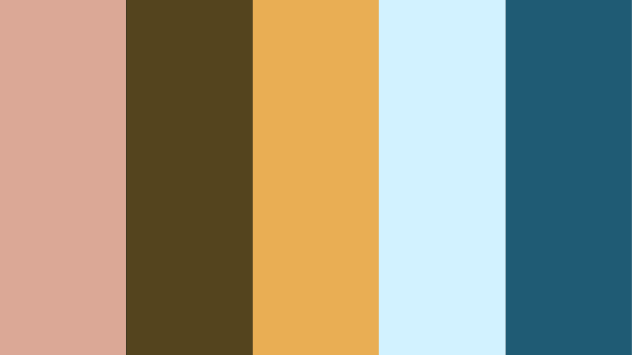
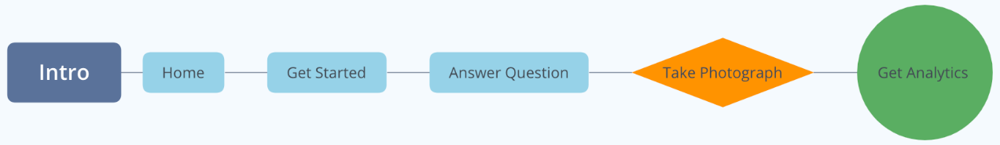
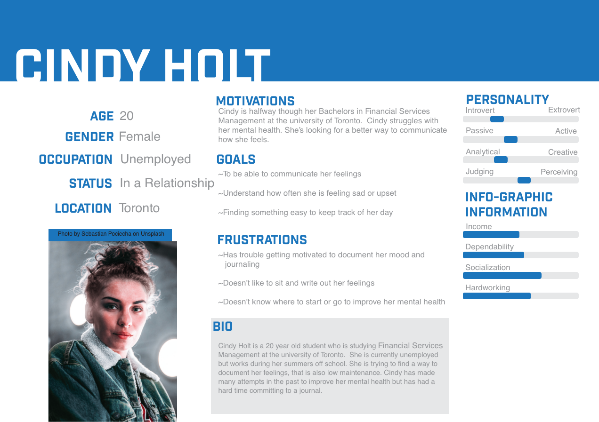
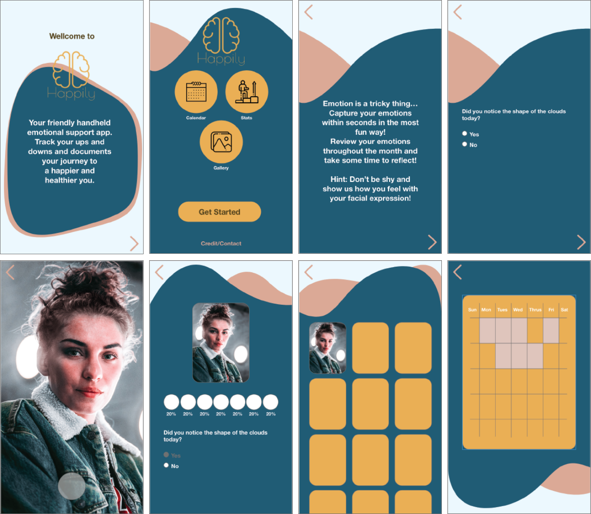

Happily was an app developed to help people monitor how they feel day to day, then give the user an update
on how they were feeling each month. The apps primary perpose was to bring awarnes to the users mnetal health
and provide Suggestions on how to deal with the emotions they are experencing. The app tack the users mood on
a calender and sends alerts to user who are experencing frequent days of sadness or grief.
To use the app the user clicks on the get started button, answer a question, takes a selfie, and then gets an analitic of what kind
of emotions they are experencing. The app asks the user a differnt question everyday, so that has the user refect on how they are
feeling that day. The app uses machine learning technology read the emotions on the users face and determine how the user is feeling.
“How might we think beyond banking to create meaningful solutions to make Canadian lives better?”

The theme of this app is mental health. I wanted the colour scheme of the app to be somehthing that was soothing and calming for the user to look at. I experimented with soft and low saturated colours and went through many ideations before choosing one.
It was Important for the font on the app was readable and simple. The users on the app need to be able to read its content without any problems, the font has to be readable and functional. I tested different fonts and went through many different types of styles before choosing one.



In conclusion, by analyzing other social media platforms of other co working spaces, we have discovered that using all features of the platform (stories, hashtags, reposting, etc.) can really increase community involvement and overall traffic of the platform. Should NUVO choose to implement these ideas, we believe they could benefit significantly.